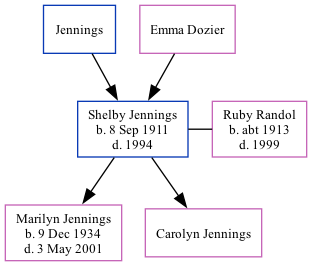

Shelby Ford Jennings 1911 - 1994
[ Home ] | [ Surnames Index ] | [ Family History ]The older of 2 children of Jennings and Emma Dozier, was born in Carlisle, Kentucky on Sep 8, 19111,2,3,4 and married Ruby Randol (with whom he had 2 children: Marilyn S and Carolyn B) on Feb 1, 1977.
During his life, he was living in St Louis, Missouri in 19351; in Cape Girardeau, Missouri, USA in 19375; in McAllen, Hidalgo, Texas, USA on Apr 1, 19401; in Cheyenne, Wyoming, USA in 19506 and in 19527; and in Cheyenne, WY in 19933.
He died in 19944 (age at Death: 82) and was buried in Cheyenne, Laramie County, Wyoming after 19944.
Parents
Children
- Marilyn S was born on Dec 9, 1934
- Carolyn B
Citations
- 1940 United States Federal Census Ancestry.com Operations, Inc. (Age: 27; Marital Status: Married; Relation to Head of House: Head)
- Kentucky, Birth Index, 1911-1999 Ancestry.com Operations Inc
- U.S. Public Records Index, Volume 1 Ancestry.com Operations, Inc.
- Web: Wyoming, Find A Grave Index, 1868-2011 Ancestry.com Operations, Inc.
- U.S. City Directories, 1821-1989 (Beta) Ancestry.com Operations, Inc.
- U.S. City Directories, 1821-1989 (Beta) Ancestry.com Operations, Inc.
- U.S. City Directories, 1821-1989 (Beta) Ancestry.com Operations, Inc.
Family Tree
Data (GEDCOM) maintained by Jay Weston Hannah, Omaha, Nebraska, USA.
Website generated by ged2site. Last updated on Jun 18, 2024.